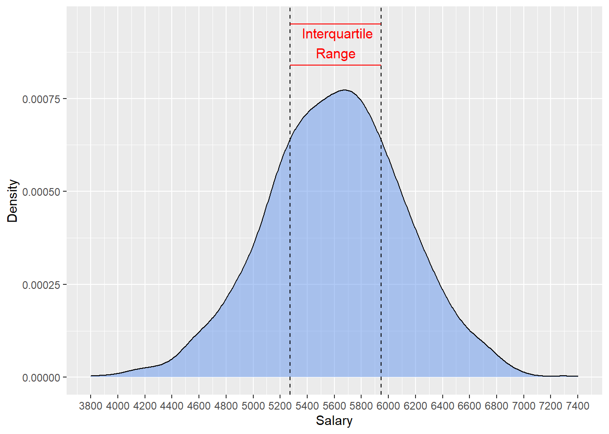

פרק 5 - עוד פונקציות בסיסיות
הרבה פונקציות שימושיות מגיעות עם החבילה הבסיסית {base}
5.2 paste
הפונקציה paste מקבלת כמה ערכים ומשרשרת אותם אחד אחרי השני (concatenation). מחזירה אובייקט מסוג character.
paste('how', 'you', "doin'?")## [1] "how you doin'?"paste('how', 'you', "doin'?", sep='-')## [1] "how-you-doin'?"הפונקציה paste0 היא מקרה פרטי שבו הערכים משורשרים בלי רווח ביניהם.
paste0(1, 2, "3")## [1] "123"# the same as:
paste(1,2,"3", sep="")## [1] "123"5.3 rep
הפונקציה rep משכפלת (replicate) איברים של וקטור או רשימה.
דוגמא: וקטור שמכיל את הערך 0 כפול 30 פעמים
rep(0,30)## [1] 0 0 0 0 0 0 0 0 0 0 0 0 0 0 0 0 0 0 0 0 0 0 0 0 0 0 0 0 0 0הערה: ניתן להתייחס ל-0 כאל וקטור עם איבר אחד. למעשה, הכתיבה הבאה שקולה.
rep(c(0),30)## [1] 0 0 0 0 0 0 0 0 0 0 0 0 0 0 0 0 0 0 0 0 0 0 0 0 0 0 0 0 0 0דוגמא נוספת: וקטור שמכיל את הערך hey כפול 20 פעמים
rep("hey",20)## [1] "hey" "hey" "hey" "hey" "hey" "hey" "hey" "hey" "hey" "hey" "hey" "hey"
## [13] "hey" "hey" "hey" "hey" "hey" "hey" "hey" "hey"5.4 seq
הפונקציה seq מחזירה וקטור של ערכים החל ממספר מסוים ועד מספר אחר, בקפיצות קבועות.
seq(from = 1, to = 100, by = 11)## [1] 1 12 23 34 45 56 67 78 89 100seq(from = 4, to = 6, by = 0.2)## [1] 4.0 4.2 4.4 4.6 4.8 5.0 5.2 5.4 5.6 5.8 6.05.5 class
הפונקציה class מחזירה את המחלקה של המשתנה שהיא מקבלת. במילים אחרות - מאיזה סוג הוא.
class(14) ## [1] "numeric"class(7.2) ## [1] "numeric"class('Ten')## [1] "character"class(FALSE)## [1] "logical"df <- data.frame()
class(df) ## [1] "data.frame"5.6 ifelse
הפונקציה ifelse היא דרך נוחה ומקוצרת להגדיר תנאי. הפונקציה מקבלת שלושה פרמטרים: תנאי, מה להחזיר אם התנאי מתקיים, מה להחזיר אם התנאי לא מתקיים.
ifelse(1==1, "it's true!","it's false!")## [1] "it's true!"ifelse(2 * 2 == 5, "it's true!","it's false!")## [1] "it's false!"5.7 IQR
הפונקציה IQR מקבלת התפלגות (בתור וקטור) ומחזירה את הטווח הבין רבעוני שלה.
במילים אחרות - הטווח שבו נמצאים מחצית מהערכים בהתפלגות
או: ההפרש בין הערך במאון ה-75 ובין הערך במאון ה-25.
set.seed(5) # to make sure the results
# will be the same every time the code run.
salary = rnorm(1000, 5600, 500)
IQR(salary)## [1] 673.7134iqr <- quantile(salary, c(0.25,0.75))
# the same as the diff between the 75th quantile and 25th quantile
print(iqr)## 25% 75%
## 5272.225 5945.938הדגמה:

בדוגמא הבאה נדגום מתוך התפלגות נורמלית עם סטיית תקן 200 במקום 500. התפלגות תהיה צרה יותר, ולפיכך הטווח הבין רבעוני ייקטן.
set.seed(5) # to make sure the results
# will be the same every time the code run.
salary = rnorm(1000, 5600, 200)
IQR(salary)## [1] 269.4854הדגמה:
